Backend-Focused .NET Developer
Ruslan Zub
Software Engineering student focused on backend systems, relational databases, REST APIs, and multiplayer synchronization.
ASP.NET Core
EF Core
MySQL
Docker
JWT Authentication
Socket.IO
REST APIs
Profile
About Me
Second-year Software Engineering student at NTU "KhPI" focused on backend development and team-based engineering.
Worked with ASP.NET Core, EF Core, MySQL, JWT authentication, REST APIs, Socket.IO communication, Docker, and deployment workflows.
Main interests: database relationships, API boundaries, realtime synchronization, and deployment configuration.
Toolkit
Primary Stack
Selected Work
Featured Projects
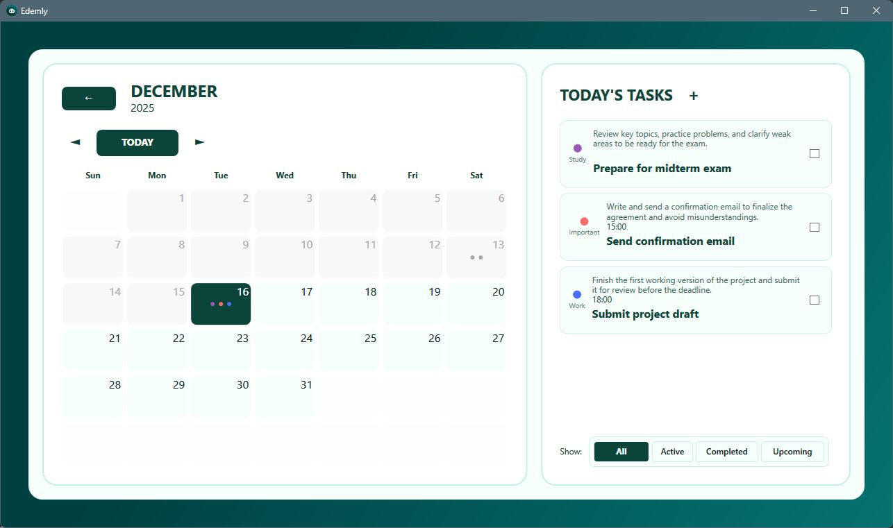
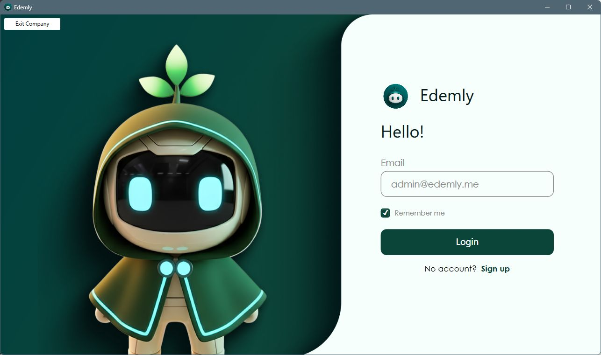
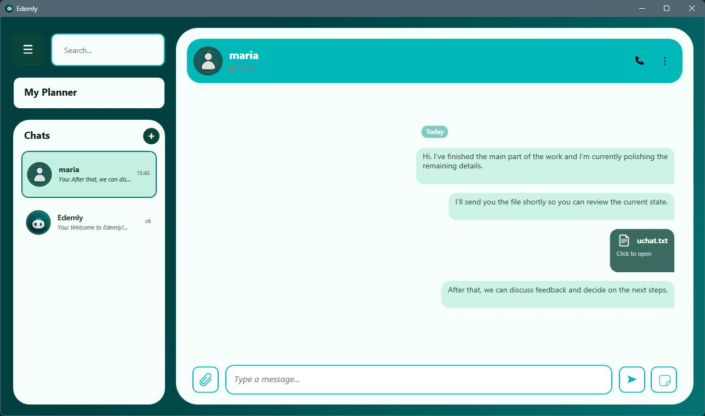
Edemly
Multi-tenant educational and communication platform built with ASP.NET Core and Entity Framework Core as a team project.
My Responsibilities
Backend structure, database relationships, API integration, authentication flows, Socket.IO communication, deployment setup, and team coordination.
Architecture & Engineering
Modular monolith with tenant-oriented data, separated services, REST endpoints, JWT auth, and EF Core relational entity management.
Technical Challenges
Keeping relational data, auth workflows, progression, inventory, communication, and multiplayer logic maintainable in one backend.
- tenant isolation
- database relationships
- API endpoint integration
- backend/frontend contracts
- client-server synchronization
- REST API endpoints
- JWT authentication
- user progression
- collections and inventory
- ranking systems
- lobby management
- multiplayer battle synchronization
- tenant-based architecture
- Dockerized environment
C#ASP.NET CoreEF CoreMySQLDockerJWTSocket.IO
GitHub

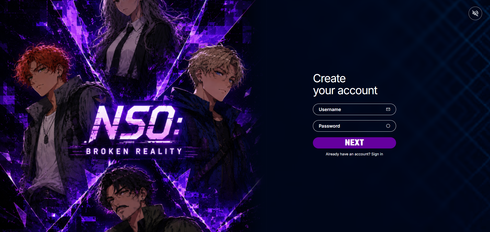
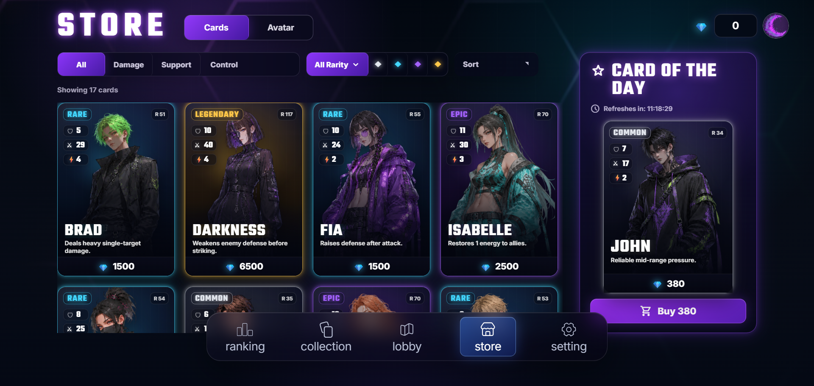
NSO: Broken Reality
Browser-based multiplayer card game developed in a team sprint, with a strong focus on server-side game state and realtime synchronization.
My Responsibilities
Room workflows, battle state updates, Socket.IO events, session handling, database design, sync debugging, and server-side action validation.
Development Workflow
Sprint-based team development with rapid iteration, collaborative debugging, and feature coordination.
Multiplayer Architecture
Server-managed lobby rooms, battle sessions, user state, inventory, progression, and authoritative battle updates.
- battle state management
- room synchronization
- Socket.IO workflows
- server-side validation
- session handling
- backend game logic
- database design
- testing and debugging
- progression mechanics
JavaScriptNode.jsSocket.IOMySQLHTMLCSS
GitHub
NSO: Architecture Evidence
Repository diagrams for infrastructure, database design, and feature boundaries.
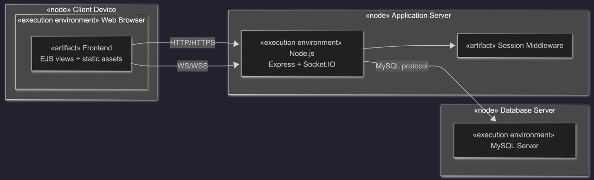
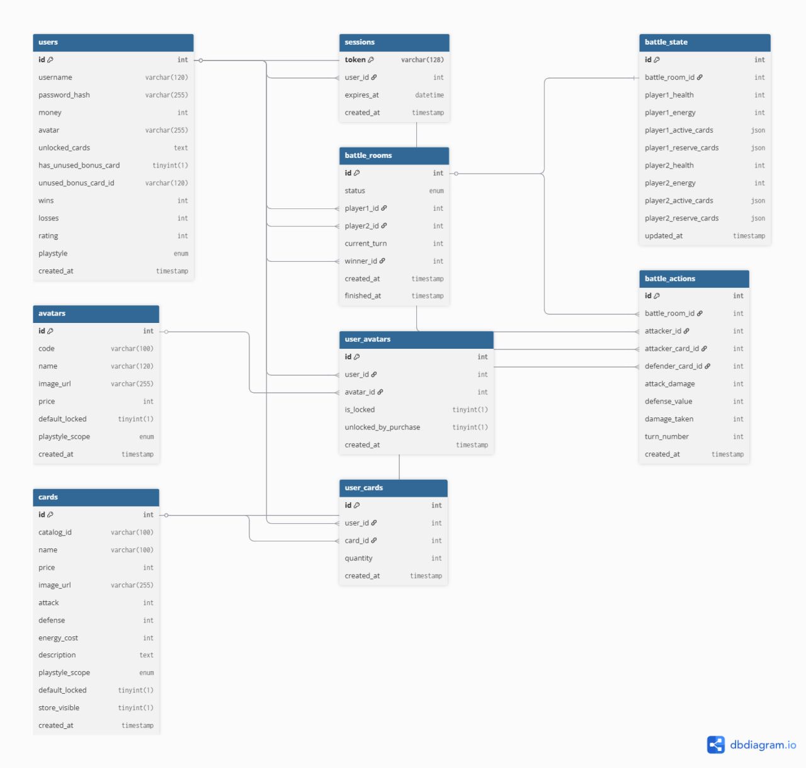
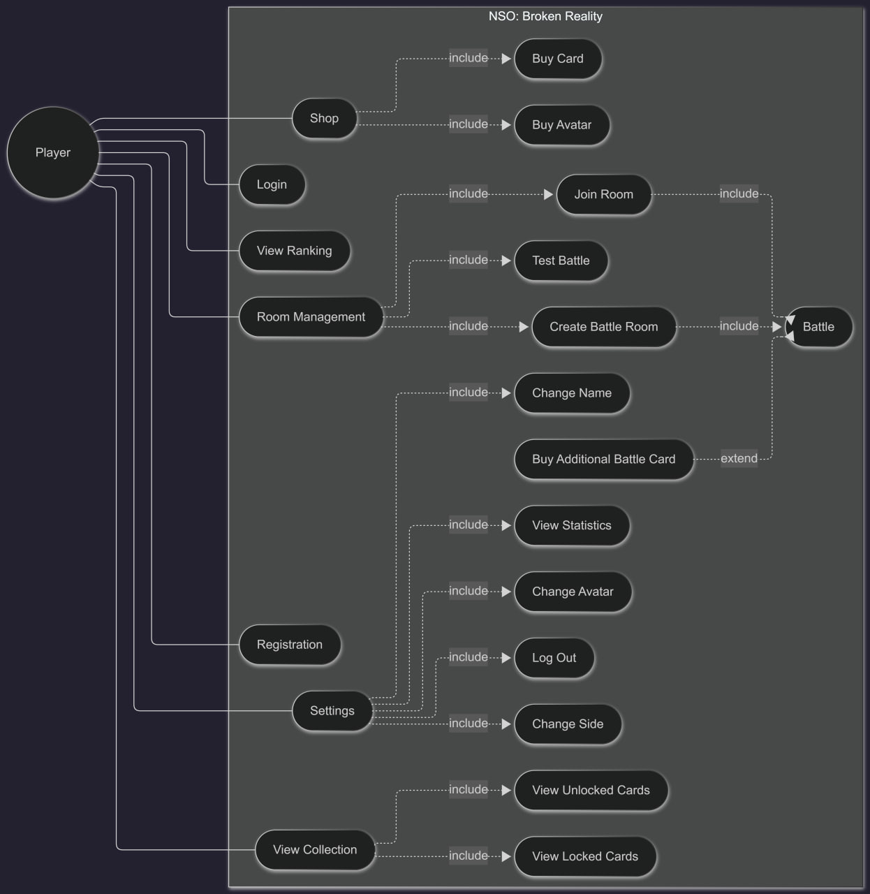
SmartTravelPlanner
Desktop route-planning application developed with WPF and C# as a team engineering project.
Engineering Focus
Desktop application structure, graph algorithms, route optimization logic, and collaborative C#/WPF development.
Learning Outcome
Practical experience with object-oriented design, local persistence, and algorithmic problem solving.
- shortest-path algorithms
- route optimization logic
- route calculation workflows
- desktop UI workflows
- file persistence
- object-oriented design
C#WPF
GitHub
SmartTravelPlanner: Design Diagrams
Design documentation for desktop workflows, algorithm flow, and route-planning behavior.
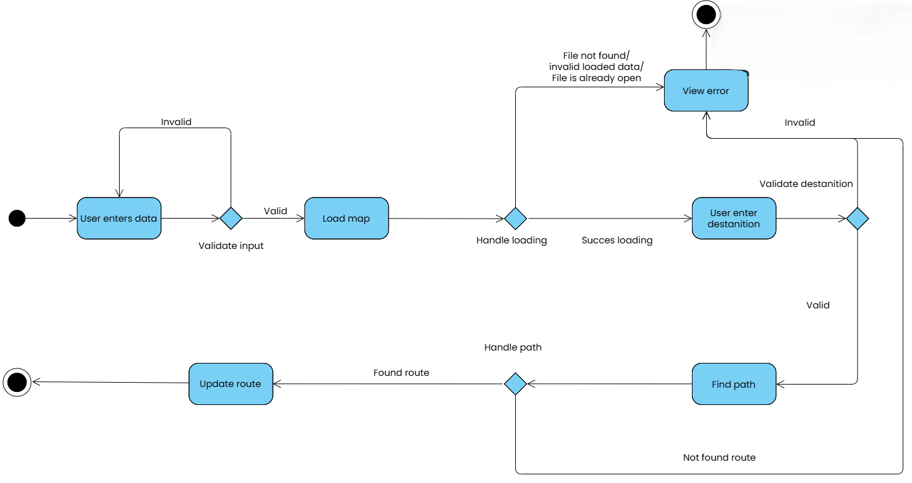
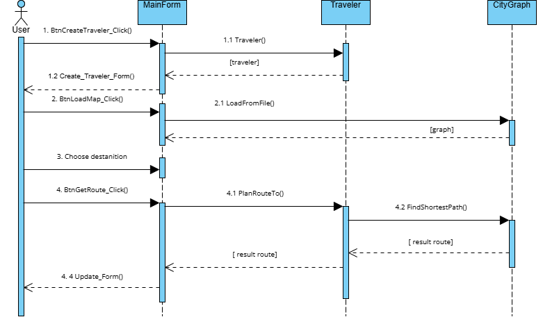
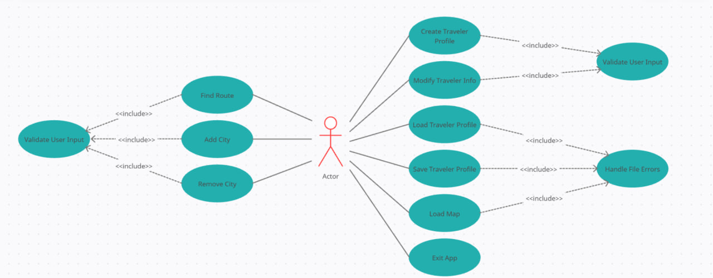
Operations
Infrastructure & Deployment
Hosted Environments
Render deployment flows, Aiven-hosted databases, and environment configuration.
Docker Workflows
Dockerized local environments for backend services and database setup.
Networking & Tunneling
Local/server networking and ngrok tunneling for API and realtime integration.
Problem Solving
Technical Challenges
Synchronizing multiplayer battle state
Organizing relational game data
Coordinating frontend/backend contracts
Preventing invalid multiplayer actions
Managing session persistence
Handling API state consistency
Configuring deployed environments